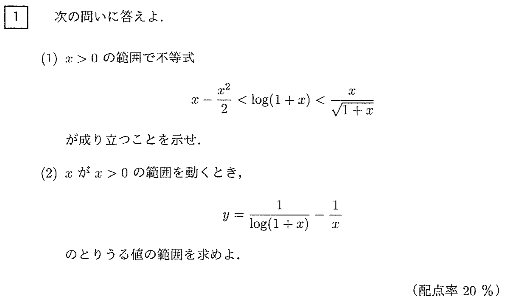

2018年阪大理系数学をPythonで解いてみた

なぜ入試数学をPythonで？？
Pythonについていろいろ調べているうちに、なんとプログラミングで数学の問題が解ける！ということを知りました。
コードの勉強にもなると思い、じゃあやってみよう！ということで、今回の記事に至りました。
どの問題を解くか？
いろいろなサイトでPythonで入試数学を解く記事は見つかります。京大、東大、センター数学などなど。
ですが、阪大数学を扱っているものはありませんでした。ならば、せっかくなので阪大数学を解こう！ということになりました。これには、自分の受けた試験を再び解く、というのもなんとなく感慨深かったことも理由としてあります。
※なお、プログラミングで解くことを重視し、本来の数学的な厳密な議論は飛ばしているため、「入試の解答」とはかけ離れたものになります。以上ご了承ください。
環境
Python3.6.1sympy：sympyはPythonのライブラリの一つで、記号計算を行うものです。
各問題共通のコードとして、sympyをインポートしておきます。
%matplotlib inline
import matplotlib.pyplot as plt
import numpy as np
import sympy as sy
sy.init_printing() # Jupyter Notebook上で、レンダリングされた結果を表示する
大阪大学2018年 理系数学 第１問

(1)
<方針>
普通に解くなら、\(y=\)(真ん中)\(-\)(左)、\(y=\)(右)\(-\)(真ん中)、とおいて、
微分 → 増減表 → グラフ → \(x>0\)で\(y>0\)
という流れで示すのが一般的だと思いますが、sympyでは、簡単にグラフが書けるので、一気にグラフを描いて示します。
x = sy.symbols('x')
変数ｘをsymbols()を用いて変数定義します
expr1 = x-x**2/2
expr2 = sy.log(1+x)
expr3 = x/sy.sqrt(1+x)
3式をそれぞれexpr1,2,3と名前を付けて宣言します。なお、sy.log()で自然対数 \(\log\) を定義できます。
sy.sqrtは平方根です。
expr1
expr2
expr3
念のため、出力して確認。
expr4 = expr2 - expr1
expr4
expr5 = expr3 - expr2
expr5
にて、(真ん中)ー(左)、(右)ー(真ん中)の関数を新たに設定。
以下ではグラフを描画する。なお、from sympy.plotting import plotが正常に描画をしなかったので、numpyとmatplotlibを用いました。
func_expr4 = sy.lambdify(x, expr4, "numpy") # numpyの関数に変換
x_expr4 = np.arange(-0.99, 5, 1e-2)
y_expr4 = func_expr4(x_expr4)
plt.plot(x_expr4, y_expr4)
plt.axvline(x=0, color="gray", linestyle="dashed", linewidth=2)
plt.axhline(y=0, color="gray", linestyle="dashed", linewidth=2)
plt.xlabel(r"$x$")
plt.ylabel(r"$f(x)$")
plt.show()
上のグラフから、\(x>0\) のとき、expr4\(>0\) すなわち、(真ん中)\(-\)(左)\(>0\) が示せる。
func_expr5 = sy.lambdify(x, expr5, "numpy") # numpyの関数に変換
x_expr5 = np.arange(-0.99, 10, 1e-2)
y_expr5 = func_expr5(x_expr5)
plt.plot(x_expr5, y_expr5)
plt.axvline(x=0, color="gray", linestyle="dashed", linewidth=2)
plt.axhline(y=0, color="gray", linestyle="dashed", linewidth=2)
plt.xlabel(r"$x$")
plt.ylabel(r"$f(x)$")
plt.show()
上のグラフから、\(x>0\) のとき、expr5\(>0\) すなわち、(右)\(-\)(真ん中)\(>0\) が示せる。よって、(1) の上式は示される。
(2)
＜方針＞
これも普通に解くなら、(1)の誘導を利用して、はさみうちやら微分やらで解けますが、今回は最大値・最小値・極限＋グラフで求めます。
expr6 = 1/sy.log(1+x)
expr7 = 1/x
expr8 = expr6 - expr7
expr8
func_expr8 = sy.lambdify(x, expr8, "numpy") # numpyの関数に変換
x_expr8 = np.arange(-0.99, 1e4, 1e-2)
y_expr8 = func_expr8(x_expr8)
plt.plot(x_expr8, y_expr8)
plt.xlim(-1, 1)
plt.axvline(x=0, color="gray", linestyle="dashed", linewidth=2)
plt.axhline(y=0, color="gray", linestyle="dashed", linewidth=2)
plt.xlabel(r"$x$")
plt.ylabel(r"$f(x)$")
plt.show()
\(-1<x<1\)の狭い範囲では上図のようになり、
plt.plot(x_expr8, y_expr8)
plt.xlim(-1, 1e4)
plt.axvline(x=0, color="gray", linestyle="dashed", linewidth=2)
plt.axhline(y=0, color="gray", linestyle="dashed", linewidth=2)
plt.xlabel(r"$x$")
plt.ylabel(r"$f(x)$")
plt.show()
\(1-<x<10^4\)という広い範囲では、expr8 は\(x \to \infty\) のとき、expr8\(\to 0\)に収束すると予想できます。
0に収束することを以下で示していきます。
まず、最大値を求めます。
from scipy.optimize import differential_evolution
これは、関数の最小値を求めることができるアルゴリズムです。 なお、これはscipyで定義域を指定した大域最小化が行える唯一の方法だそうです。
numeric_expr8 = sy.lambdify(x , expr8)
lambdaを使って expr8 を、\(x\) を変数（引数）とする無名関数に変換します。
minus_numeric_expr8 = lambda x: -numeric_expr8(x)
ここでscipy.optimizeで求められるのは最小値、ということなので expr8 の符号を反転させ、
最小値を求め、のちに最小値の符号を反転させ最大値とする、という方法で求めます。
differential_evolution(minus_numeric_expr8, [(0, 1e5)])
という結果になります。
ここで、fun以下が求めたい最小値なので、expr8 の最大値は\(0.49980\cdots \approx 0.5=\frac{1}{2}\)
となります。
次に、expr8 の最小値として極限を求めます。
無限大まで飛ばします。
f1 = sy.limit(expr8/x, x, sy.oo)
極限式をf1と置きます。
極限はsy.limit()で求められます。
print(f1)
すると、無限大への極限は0となることがわかります。
以上より、\(x>0\)では\(0<y<\frac{1}{2}\)の範囲を取りうるとわかります。
答え
(1)上記のグラフより
(2) \(0<y<\frac{1}{2}\)
感想
- 今回は時間の都合で大問１しか解けませんでしたが、今後他のものにも挑戦したいと思います。（第4問の空間図形とか3次元で難しそうですが…）
- 僕はPythonの文法の勉強がまだ終わっていない状態での今回の記事でしたが、実際に簡単目なコマンドを実行してみる、というのはとても良い練習になり、今後の勉強の理解の助けになると思いました。Jupyterに慣れることができたのも良かったです。
- （入試問題を見ていると、急に去年の受験時代が思い出され、良くも悪くも感傷に浸ってしまいます。去年のやる気に負けないようにしたい…！）
- これからも頑張って勉強していきます！
- 前の記事 : カプランマイヤー曲線について
- 次の記事 : 化合物データ処理ソフト RDKit
- 関連記事 :